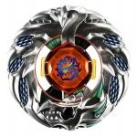

Orojya Wyvang 145EDS
| Orojya Wyvang 145EDS | |
|  | |
| Number: | BBG-25 |
|---|---|
| System: | Beyblade Zero-G |
| Type: | Stamina |
| Element: | Thunder + Water |
Contents
Note: Wyvang was released exclusively in the BBG-25 Ultimate Synchrom DX Set Stamina & Defense Type.
Stone Face: Wyvang
- Weight: grams
The Face mark on this Stone Face illustrates a wyvern, which is a reptile with two legs, some wings and a dragon head.
Chrome Wheel 1: Wyvang
- Weight: 31.92 grams
Almost completely circular, Wyvang's shape is only disturbed by curved lines coming from the center and, like claws, going down toward the bottom of the Chrome Wheel. At the top is a smooth gathering of long feathers, while the bottom shows a dragon head from the side, which is where a Crystal Wheel's orb would coincidentally protrude to form a big eye. The stickers for this Chrome Wheel give it a scaled body, as is needed to perfect the wyvern theme.
Chrome Wheel 2: Orojya
- Weight: 29.39 grams
This Chrome Wheel consists of a ring circled by multiple snakes. These engraved serpents create small protrusions all around Orojya, like a gear. Following the characteristic of all Zero-G Beyblades, Orojya has a hole for the Crystal Wheel's orb to protrude into, and two snake heads encase it from each side with their fangs. Some swirly designs exist in the inner part of this Chrome Wheel, all the way down to the opposite side of the crystal, where a menacing face is formed. Made to resemble a snake's head in a front view, two evil eyes are engraved as well as small fangs near the edge of Orojya, and that big head's apparent mustaches are prolonged to become the many small serpents encircling the rest of the Chrome Wheel.
Track: 145
| Weight: | 1.47 grams | Full Width: | 20 mm | Minimum Width: | 18 mm | Height: | 14.50 mm |
145, along with its variants (C145, DF145, etc.), was once the highest Track available, until the 230 Track was released with Flame Byxis. It can be used in Stamina customs to great effect due to its tall height, which allows for more wobbling as the Beyblade loses its spin velocity. However, gimmick-paired Tracks like BD145 have immensely outclassed their original bare variant, on top of several taller gimmick Tracks surpassing 145 as well against heavy, mid-height Attackers. Even in Stamina battles, 145 does not offer enough balance: Tracks like AD145 and W145 provide a good center of gravity, and aid with a slight downforce to maintain stability.
Bottom: Eternal Defense Sharp
- Weight: gram
Other Versions
Gallery
-
Wyvang Chrome Wheel render